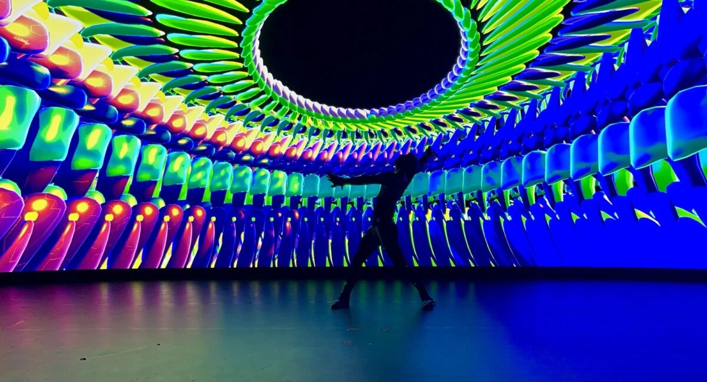

Expert Talks
Interactive sessions with industry leaders on the latest trends in web development, artificial intelligence, and UX/UI design.

Digital Innovation Festival 2026
Date:
Time: AM - PM
Location: Metropolitan Convention Center, Hall A
Interactive sessions with industry leaders on the latest trends in web development, artificial intelligence, and UX/UI design.
Participate in practical workshops on programming with Python, building prototypes with Figma, and optimizing CSS performance.
Connect with other tech professionals, students, and enthusiasts to exchange ideas and expand your network.
Secure your spot at the Digital Innovation Festival 2026. Join us to learn from top experts, network with peers, and get hands-on experience with the latest tech.
Morning Sessions (10:00 AM - 12:30 PM)
Lunch Break (12:30 PM - 1:30 PM)
Afternoon Sessions (1:30 PM - 5:00 PM)
TechCorp Solutions
Global Tech, Innovate LLC
The Digital Digest, Future Web Magazine